Grammar Jeopardy 🎯
놀며 복습한 월요일
여름캠프 4주차의 문을 열었습니다! 월요일은 지난 시간에 익힌 영어를 꺼내 쓰는 복습과 팀워크의 날이었어요. 질문으로 서로를 알아가는 이름 게임부터 미스터리 게임, 그리고 교실을 뜨겁게 만든 English Grammar Jeopardy까지 — 공부가 놀이가 되는 하루였습니다. 💛

🎯 English Grammar Jeopardy 팀으로 되짚는 영어
두 팀은 점수를 걸고 Who·What·Where·When·Why·How, Challenge Questions, Suffix Superstars, Root Word Riddles, Past Tense Verbs, Past Continuous Verbs에 도전했습니다. 답을 떠올리고, 문장으로 말하고, 친구의 생각을 들으며 문법 지식이 실제 언어가 되었어요.
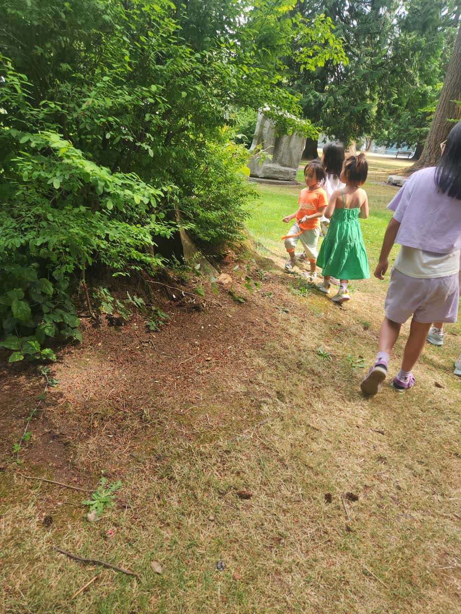
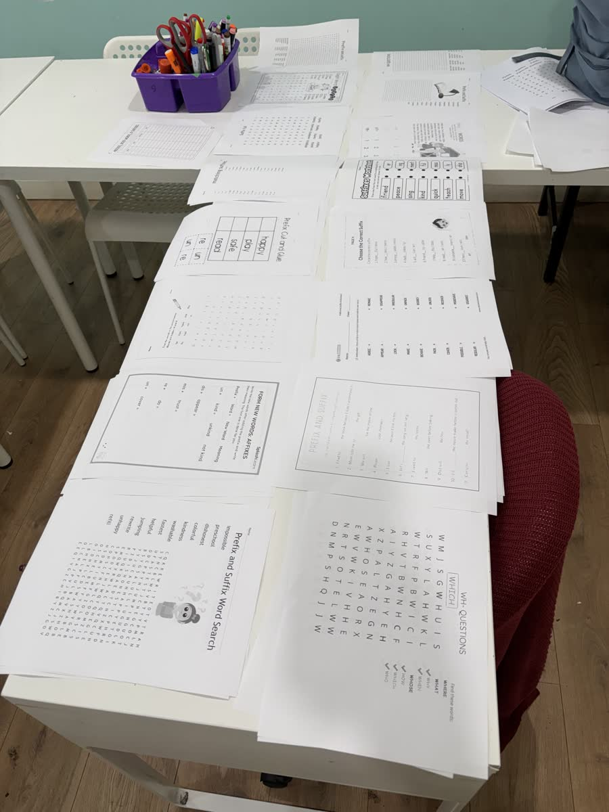
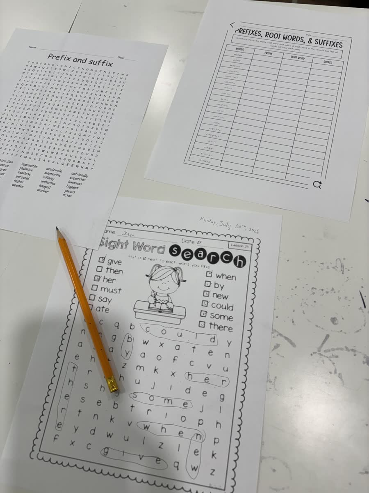
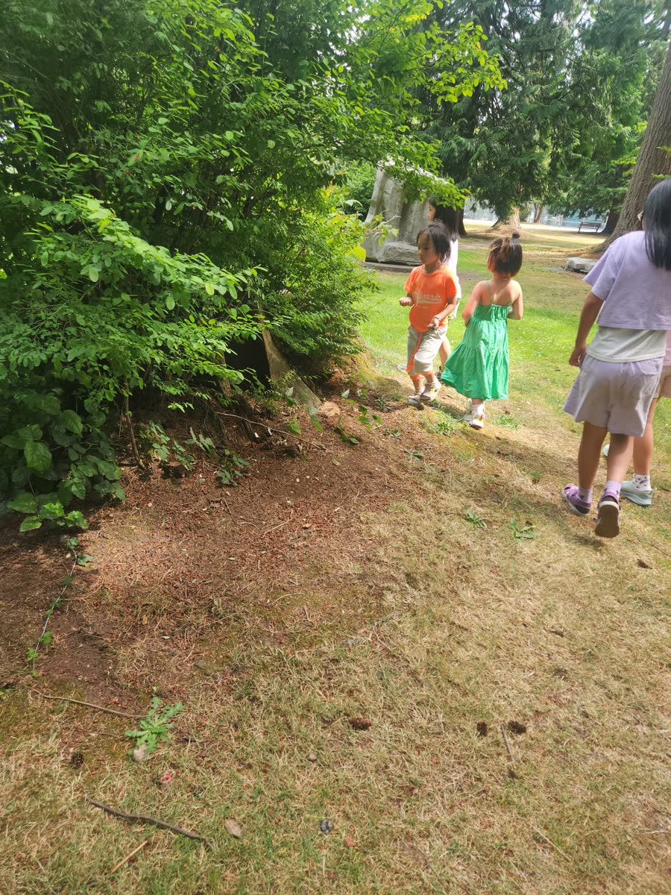
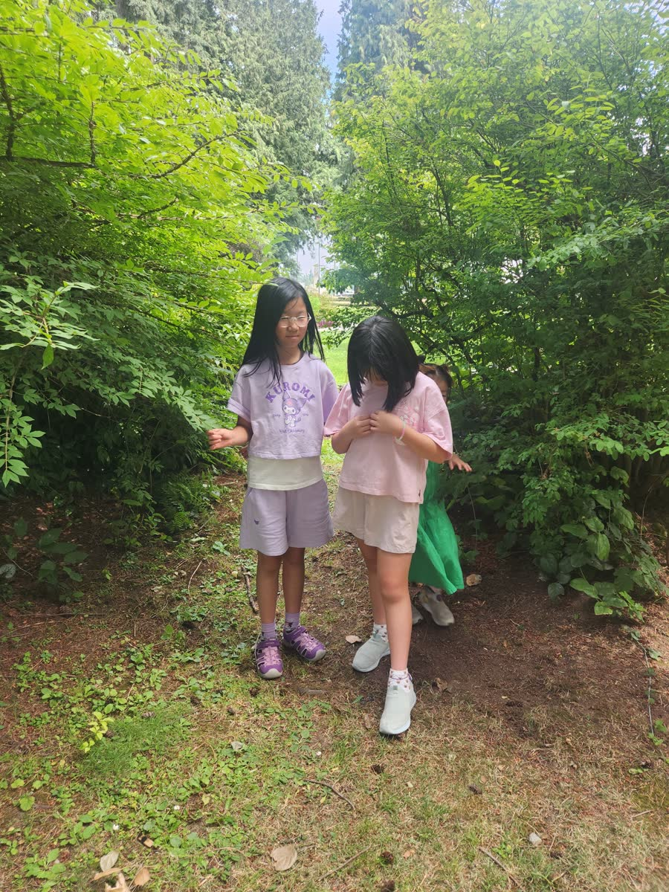
🌳 Park Break 달리고 오르고, 다시 충전
열심히 머리를 쓴 뒤에는 공원으로! 햇살과 나무 그늘 아래서 오르고, 매달리고, 친구들과 달리며 몸을 마음껏 움직였습니다.
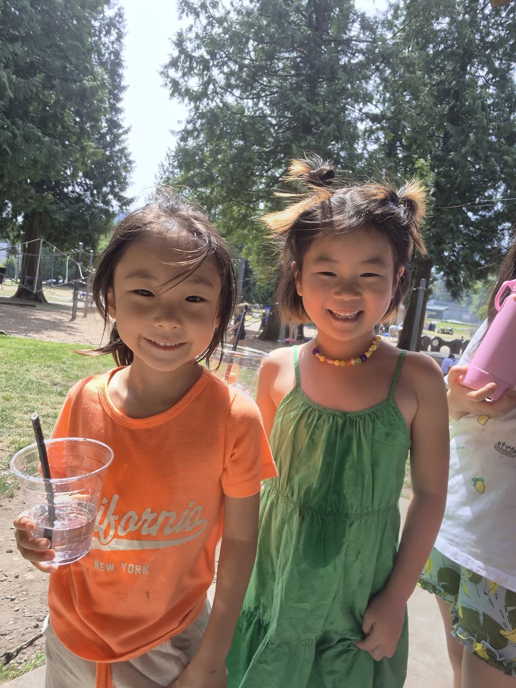
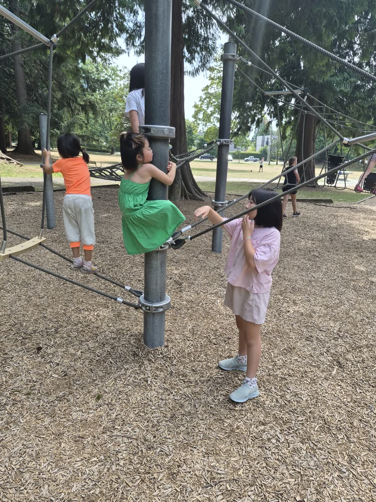
🍜 Today’s Lunch 짜파게티 한 그릇
점심은 아이들이 좋아하는 짜파게티에 김치와 김, 따뜻한 밥을 곁들였습니다. 신나게 뛰고 돌아온 뒤라 접시가 더 빠르게 비워졌답니다. 😋
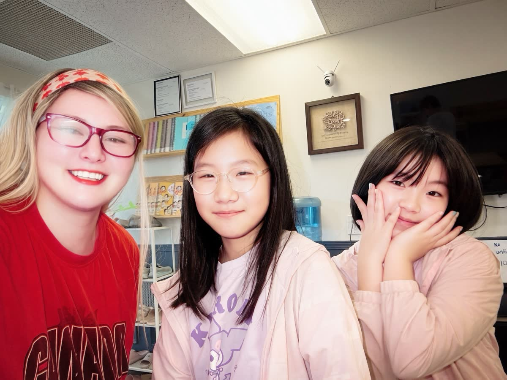
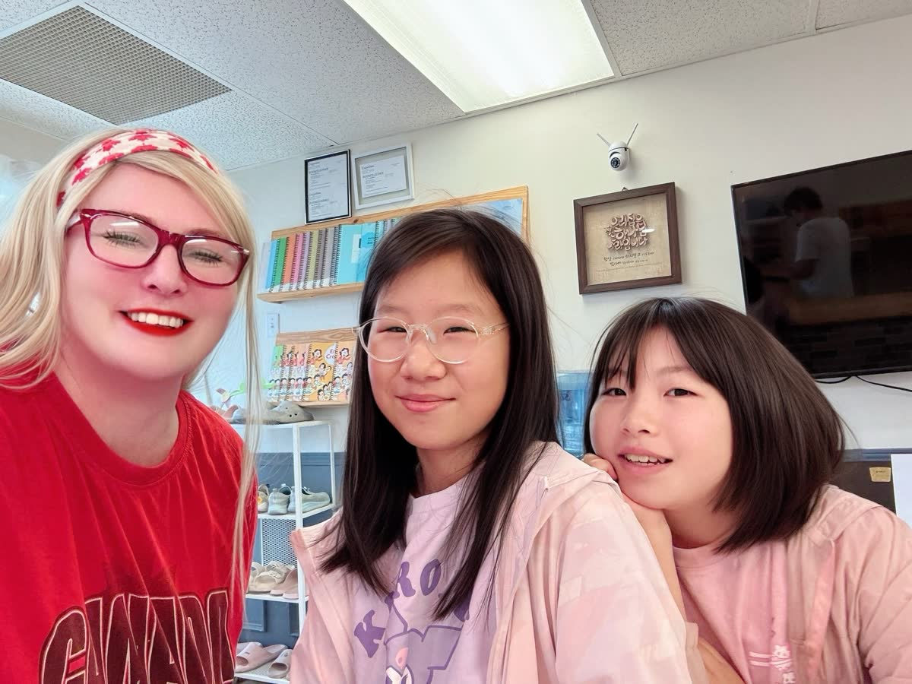
💬 Question Cards 묻고 답하며 만드는 문장
지난주부터 이어 온 여섯 질문도 카드로 다시 만났습니다. Who? What? Where? When? Why? How?를 조합해 엉뚱하고 재미있는 문장을 만들며, 질문과 답의 구조를 자연스럽게 복습했어요.
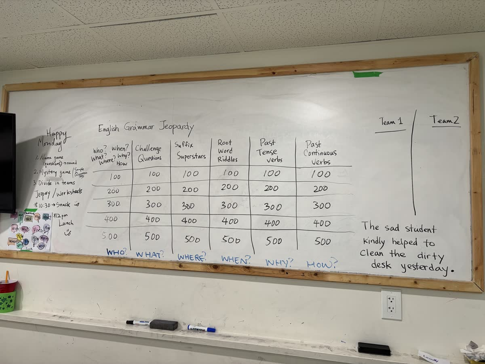
🎹 Music Break 교실에 번진 피아노 소리
쉬는 시간에는 피아노 앞으로 자연스럽게 모였습니다. 어린 친구들은 나란히 건반을 눌러 보고, 형은 한 곡을 차분히 들려주었어요.
🍿 Balance Challenge 팝콘과 공 균형 게임
오후 간식은 갓 튀긴 팝콘. 기다리는 동안에는 커다란 축구공을 머리 위에 올리고 균형을 잡는 도전이 시작됐습니다. 집중하다가도 공이 굴러가면 웃음이 터졌어요!
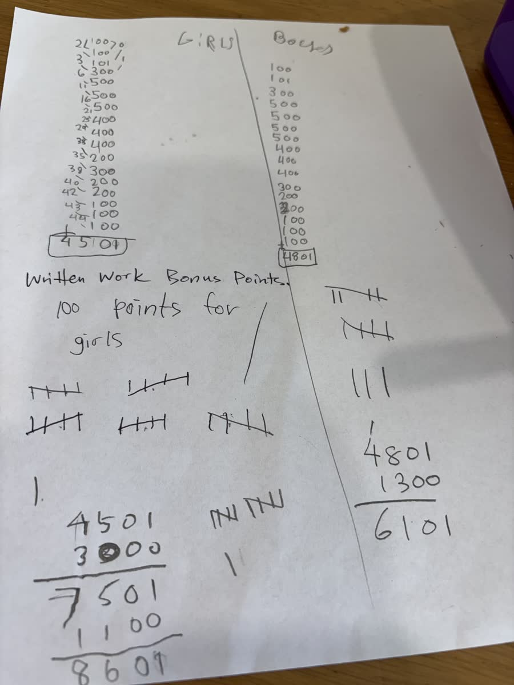
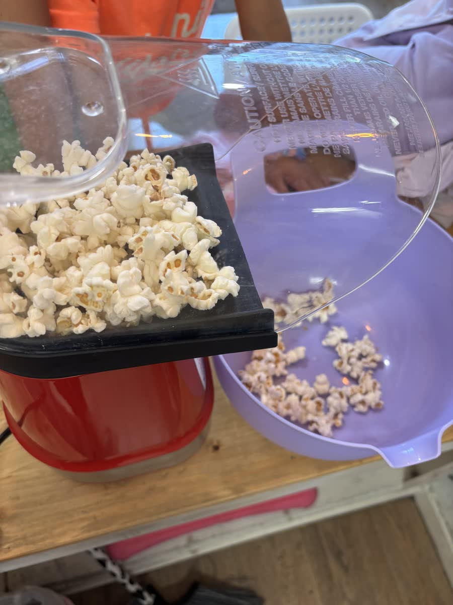
🌱 Caring for Our Garden 작은 손으로 돌보는 화단
하루의 끝에는 학원 앞 화단을 살폈습니다. 흙을 고르고 마른 잎을 골라내며 식물이 잘 자랄 자리를 함께 돌봤어요. 교실에서 배운 협동이 생활 속 작은 책임으로 이어졌습니다.
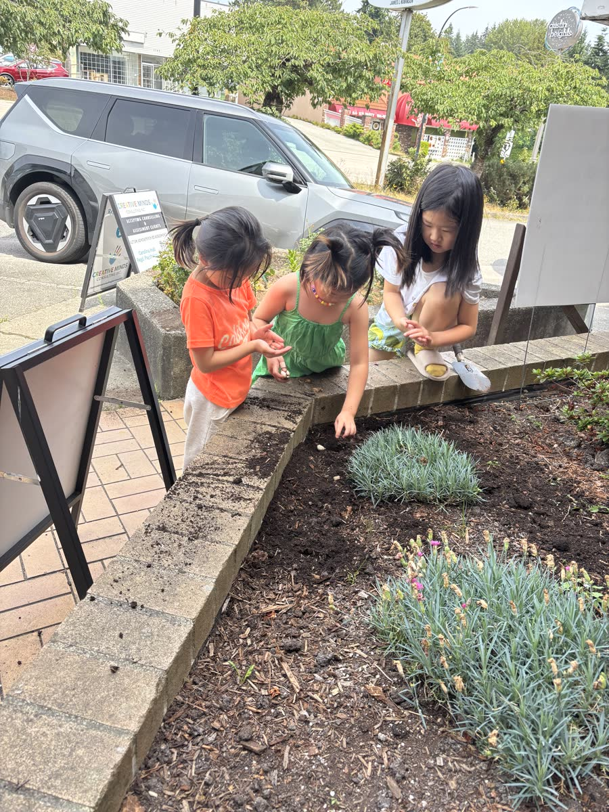
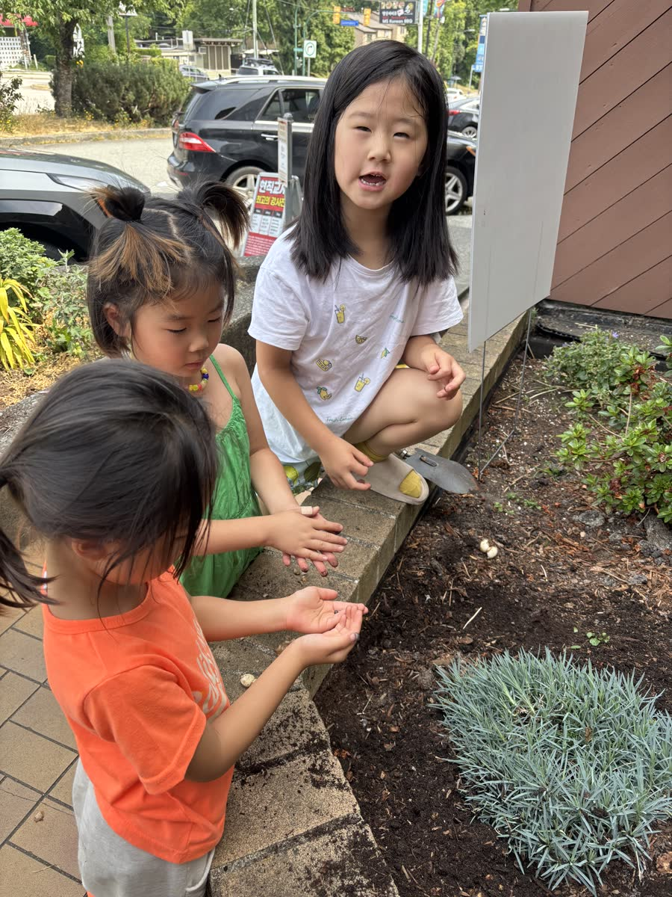
오늘의 배움
복습은 같은 것을 반복하는 시간이 아니라, 이미 아는 것을 게임·문장·친구와의 대화 속에서 다시 꺼내 쓰는 시간입니다. 4주차 첫날, 아이들은 머리와 몸과 마음을 모두 움직였습니다.